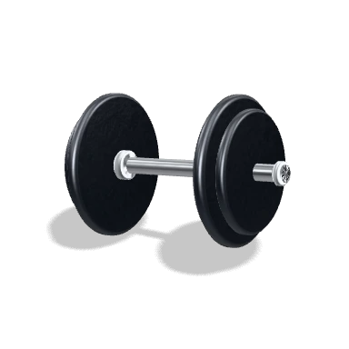
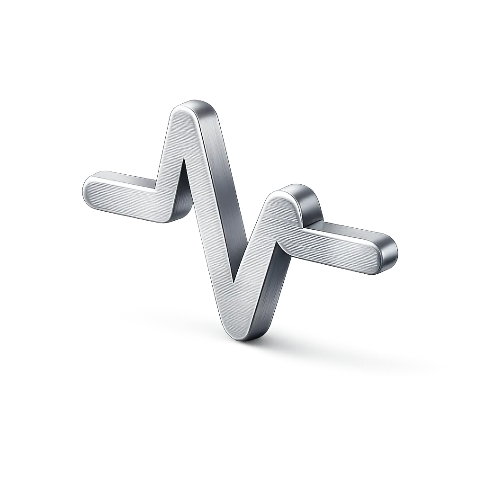
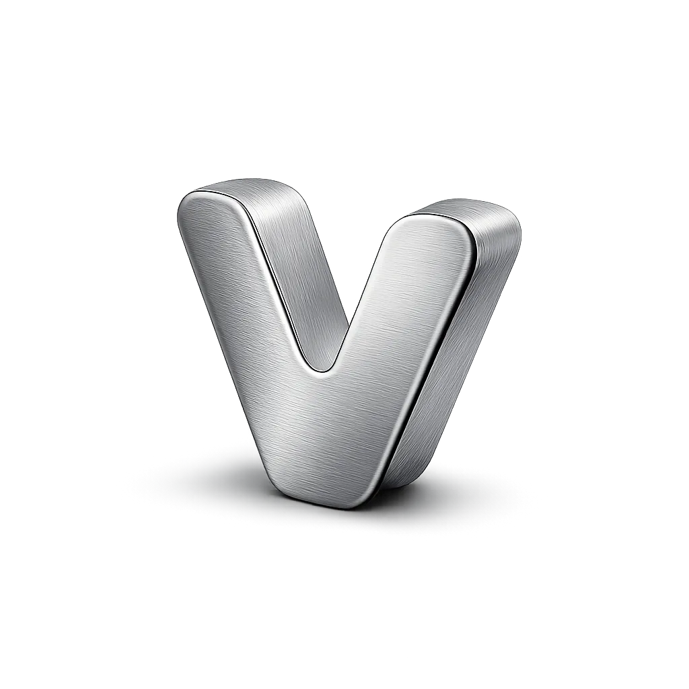
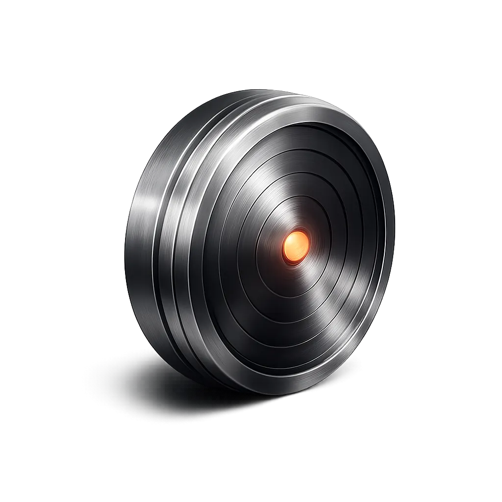
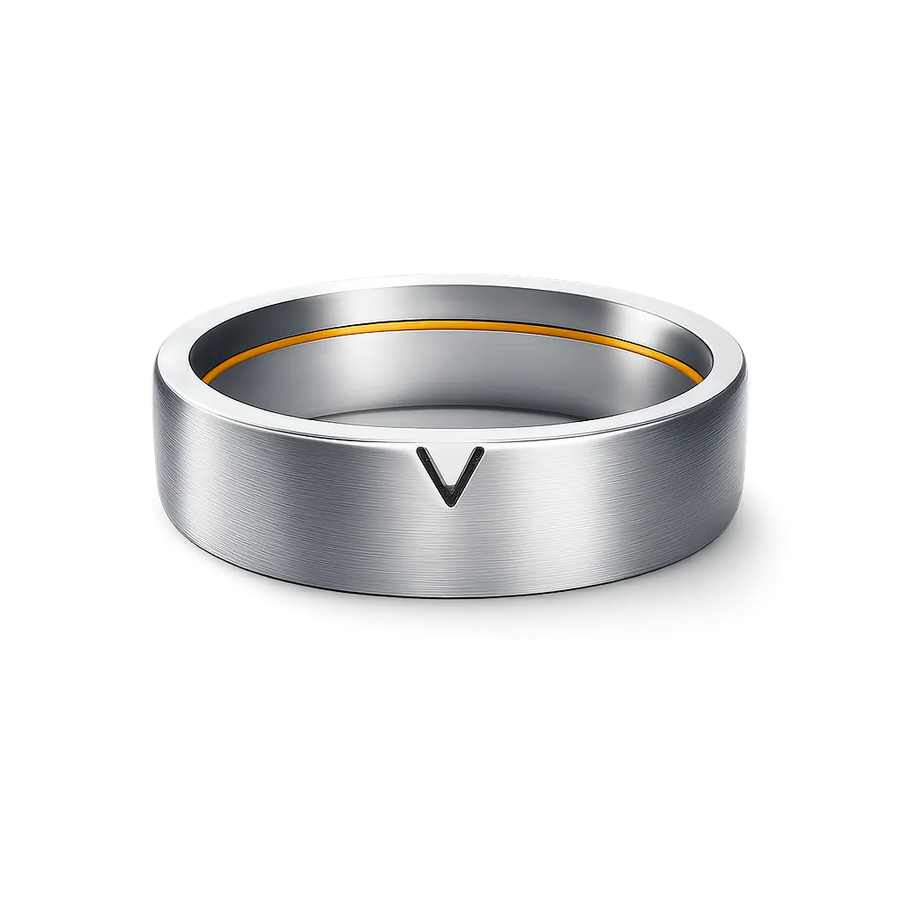

vlog · seis logos en aluminio
El mismo aluminio cepillado y la misma luz que los dibujos de la app, con el ámbar como único color. Cada uno, tal cual se vería en la cabecera, el login, el iPhone y la pestaña.




Pulso
La línea del latido, en aluminio macizo; su latido es la «v».
Placa
Una placa de aluminio con el latido grabado y relleno de ámbar. Ya es un icono de app.

Monograma
Una «v» maciza, como un pisapapeles. La más sobria.

Lente
Un aro de objetivo con el punto ámbar de «grabando»: vlog es tu vida grabada.

Anillo
Una pulsera de aluminio con la muesca en «v» y el filo ámbar.
Días
Siete discos apilados, uno por día; el de arriba lleva la «v».
Generados hoy con el mismo modelo y las mismas referencias que los dibujos de la app. Elige uno (o mezcla dos: «la placa con la v del monograma») y lo pongo en la app, el icono del iPhone y la pestaña. Nada de esto está aún en la app.